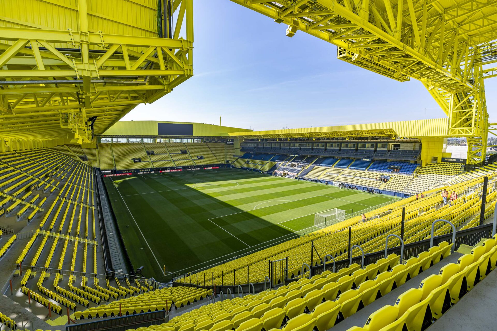

Autor: Damian Correa
Esta es una página dedicada al Villarreal CF, conocido como "El Submarino Amarillo". Aquí encontrarás información sobre su historia, jugadores y logros destacados.
Fundado en 1923, el Villarreal CF ha tenido un crecimiento notable en el fútbol español e internacional.
"El esfuerzo y la pasión nos han llevado a la gloria europea."
Recientemente, ganaron la UEFA Europa League en 2021.
Antes se consideraba un club menor en LaLiga.
Una imagen del estadio:
Un video de momentos destacados:
Un himno del club:
| Competición | Año | Resultado | |
|---|---|---|---|
| UEFA Europa League | 2021 | Campeón | |
| LaLiga | 2007-08 | 2º lugar | Subcampeón |
| 2019-20 | 5º lugar | ||